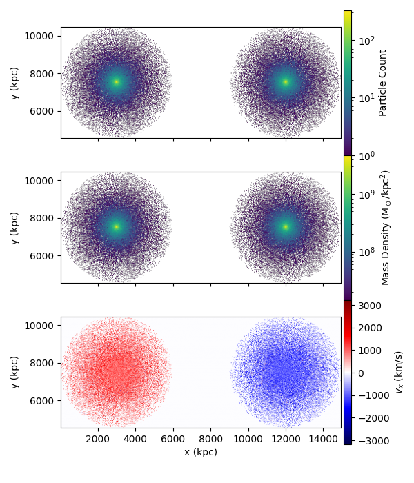

Note
Go to the end to download the full example code.
Initial Conditions for Gadget-4 Simulations#
In this example, we’ll use Pisces to generate a galaxy cluster merger model and export it as initial conditions for a Gadget-4 simulation.
We will:
Construct two simple spherical galaxy cluster models.
Arrange them on a collision trajectory.
Convert these models into Gadget-4–compatible particle data.
This tutorial illustrates how analytical models in Pisces can be transformed into realistic, particle-based initial conditions for large-scale hydrodynamic simulations.
Setup#
Import the required modules.
We’ll use the SphericalGalaxyClusterModel
to construct equilibrium cluster models and the
Gadget4Frontend
to export them into Gadget-4 format.
import tempfile
import matplotlib.pyplot as plt
import numpy as np
import unyt
from pisces.extensions.simulation import gadget, initial_conditions
from pisces.models.galaxy_clusters import SphericalGalaxyClusterModel
from pisces.particles import Gadget4ParticleDataset
from pisces.profiles import NFWDensityProfile
Density Profiles#
We define Navarro–Frenk–White (NFW) profiles for both the total matter and gas components of a single galaxy cluster.
These parameters correspond to a modest-mass cluster and will be used to define the equilibrium structure for each model.
rho_tot = unyt.unyt_quantity(5e6, "Msun/kpc**3") # Total density normalization
r_s_tot = unyt.unyt_quantity(200, "kpc") # Total scale radius
rho_gas = unyt.unyt_quantity(5e5, "Msun/kpc**3") # Gas density normalization
r_s_gas = unyt.unyt_quantity(220, "kpc") # Gas scale radius
# Create the NFW profiles
total_density = NFWDensityProfile(rho_0=rho_tot, r_s=r_s_tot)
gas_density = NFWDensityProfile(rho_0=rho_gas, r_s=r_s_gas)
Cluster Model Construction#
Using these profiles, we now build a self-consistent spherical cluster model defined on a logarithmic radial grid.
The SphericalGalaxyClusterModel
automatically computes the hydrostatic equilibrium structure
(gas pressure, mass, potential, etc.) from the provided density fields.
tmpdir = tempfile.TemporaryDirectory()
filename = f"{tmpdir.name}/cluster_model.h5"
rmin = unyt.unyt_quantity(1.0, "kpc")
rmax = unyt.unyt_quantity(3.0, "Mpc")
model = SphericalGalaxyClusterModel.from_density_and_total_density(
gas_density,
total_density,
filename,
min_radius=rmin,
max_radius=rmax,
num_points=500,
overwrite=True,
)
Preparing metadata...: 0%| | 0/7 [00:00<?, ?it/s]
Generating grid...: 14%|█▍ | 1/7 [00:00<00:00, 119837.26it/s]
Building density...: 29%|██▊ | 2/7 [00:00<00:00, 2264.13it/s]
Computing masses...: 43%|████▎ | 3/7 [00:00<00:00, 2253.79it/s]
Calculating potential...: 57%|█████▋ | 4/7 [00:00<00:00, 238.87it/s]
Calculating potential...: 71%|███████▏ | 5/7 [00:00<00:00, 17.52it/s]
Calculating temperature...: 71%|███████▏ | 5/7 [00:00<00:00, 17.52it/s]
Performing additional computations...: 86%|████████▌ | 6/7 [00:08<00:00, 17.52it/s]
COMPLETE: 86%|████████▌ | 6/7 [00:08<00:00, 17.52it/s]
COMPLETE: 100%|██████████| 7/7 [00:08<00:00, 1.56s/it]
Merger Setup#
To create an idealized cluster merger, we position two identical clusters in a 15 Mpc simulation box, moving toward each other at ±1000 km/s.
Each model is offset by \(3\) Mpc along the x-axis, with the box center at (7.5, 7.5, 7.5) Mpc.
models = [
{
"model_name": "cluster_1",
"model": model,
"position": unyt.unyt_array([3.0, 7.5, 7.5], "Mpc"),
"velocity": unyt.unyt_array([1000.0, 0.0, 0.0], "km/s"),
},
{
"model_name": "cluster_2",
"model": model,
"position": unyt.unyt_array([12.0, 7.5, 7.5], "Mpc"),
"velocity": unyt.unyt_array([-1000.0, 0.0, 0.0], "km/s"),
},
]
ic_dir = f"{tmpdir.name}/ics"
ics = initial_conditions.InitialConditions3DCartesian.create_ics(ic_dir, *models)
/tmp/tmp7x3k3_p0/ics/cluster_1.h5
/tmp/tmp7x3k3_p0/ics/cluster_2.h5
Gadget-4 Frontend#
The Gadget-4 frontend manages the conversion between the Pisces IC structure and the format expected by Gadget-4.
This includes unit conversion, particle type mapping, and configuration generation.
frontend = gadget.frontends.Gadget4Frontend(ics, overwrite=True)
frontend.config["parameters.boxsize"] = unyt.unyt_quantity(15.0, "Mpc")
Sampling into Particles#
Gadget-4 evolves particles, not continuous profiles. Here we sample each cluster into discrete gas and dark matter particles with appropriate mass and velocity distributions.
ics.generate_particles(
"cluster_1",
num_particles={"dark_matter": 100_000, "gas": 50_000},
overwrite=True,
)
ics.generate_particles(
"cluster_2",
num_particles={"dark_matter": 100_000, "gas": 50_000},
overwrite=True,
)
Generating particles: 0%| | 0/2 [00:00<?, ?species/s]
Generating 100000 dark_matter particles...
Generating particles: 0%| | 0/2 [00:00<?, ?species/s]
Interpolating dark_matter fields: 0%| | 0/3 [00:00<?, ?fields/s]
DF for 'dark_matter' not found, attempting to compute it...
Generating particles: 0%| | 0/2 [00:00<?, ?species/s]
Generating particle velocities...: 0%| | 0/100000 [00:00<?, ?it/s]
Generating particle velocities...: 5%|▌ | 5083/100000 [00:00<00:01, 50827.38it/s]
Generating particle velocities...: 10%|█ | 10215/100000 [00:00<00:01, 51112.74it/s]
Generating particle velocities...: 15%|█▌ | 15390/100000 [00:00<00:01, 51399.53it/s]
Generating particle velocities...: 21%|██ | 20571/100000 [00:00<00:01, 51561.30it/s]
Generating particle velocities...: 26%|██▌ | 25750/100000 [00:00<00:01, 51640.98it/s]
Generating particle velocities...: 31%|███ | 30949/100000 [00:00<00:01, 51757.85it/s]
Generating particle velocities...: 36%|███▌ | 36169/100000 [00:00<00:01, 51899.50it/s]
Generating particle velocities...: 41%|████▏ | 41385/100000 [00:00<00:01, 51982.04it/s]
Generating particle velocities...: 47%|████▋ | 46621/100000 [00:00<00:01, 52098.65it/s]
Generating particle velocities...: 52%|█████▏ | 51842/100000 [00:01<00:00, 52132.69it/s]
Generating particle velocities...: 57%|█████▋ | 57058/100000 [00:01<00:00, 52139.20it/s]
Generating particle velocities...: 62%|██████▏ | 62293/100000 [00:01<00:00, 52201.79it/s]
Generating particle velocities...: 68%|██████▊ | 67514/100000 [00:01<00:00, 52183.11it/s]
Generating particle velocities...: 73%|███████▎ | 72733/100000 [00:01<00:00, 52182.05it/s]
Generating particle velocities...: 78%|███████▊ | 77970/100000 [00:01<00:00, 52238.18it/s]
Generating particle velocities...: 83%|████████▎ | 83202/100000 [00:01<00:00, 52260.00it/s]
Generating particle velocities...: 88%|████████▊ | 88429/100000 [00:01<00:00, 52259.17it/s]
Generating particle velocities...: 94%|█████████▎| 93655/100000 [00:01<00:00, 52256.18it/s]
Generating particle velocities...: 99%|█████████▉| 98882/100000 [00:01<00:00, 52258.51it/s]
Generating particles: 50%|█████ | 1/2 [00:02<00:02, 2.58s/species]
Generating 50000 gas particles...
Generating particles: 50%|█████ | 1/2 [00:02<00:02, 2.58s/species]
Interpolating gas fields: 0%| | 0/8 [00:00<?, ?fields/s]
Generating particles: 100%|██████████| 2/2 [00:02<00:00, 1.32s/species]
Generating particles: 0%| | 0/2 [00:00<?, ?species/s]
Generating 100000 dark_matter particles...
Generating particles: 0%| | 0/2 [00:00<?, ?species/s]
Interpolating dark_matter fields: 0%| | 0/3 [00:00<?, ?fields/s]
DF for 'dark_matter' not found, attempting to compute it...
Generating particles: 0%| | 0/2 [00:00<?, ?species/s]
Generating particle velocities...: 0%| | 0/100000 [00:00<?, ?it/s]
Generating particle velocities...: 5%|▌ | 5094/100000 [00:00<00:01, 50938.23it/s]
Generating particle velocities...: 10%|█ | 10237/100000 [00:00<00:01, 51222.43it/s]
Generating particle velocities...: 15%|█▌ | 15360/100000 [00:00<00:01, 51222.40it/s]
Generating particle velocities...: 21%|██ | 20547/100000 [00:00<00:01, 51474.72it/s]
Generating particle velocities...: 26%|██▌ | 25695/100000 [00:00<00:01, 51472.70it/s]
Generating particle velocities...: 31%|███ | 30868/100000 [00:00<00:01, 51557.35it/s]
Generating particle velocities...: 36%|███▌ | 36027/100000 [00:00<00:01, 51566.35it/s]
Generating particle velocities...: 41%|████ | 41184/100000 [00:00<00:01, 51027.75it/s]
Generating particle velocities...: 46%|████▋ | 46346/100000 [00:00<00:01, 51209.22it/s]
Generating particle velocities...: 52%|█████▏ | 51507/100000 [00:01<00:00, 51330.72it/s]
Generating particle velocities...: 57%|█████▋ | 56660/100000 [00:01<00:00, 51390.46it/s]
Generating particle velocities...: 62%|██████▏ | 61833/100000 [00:01<00:00, 51492.73it/s]
Generating particle velocities...: 67%|██████▋ | 67017/100000 [00:01<00:00, 51594.89it/s]
Generating particle velocities...: 72%|███████▏ | 72218/100000 [00:01<00:00, 51719.09it/s]
Generating particle velocities...: 77%|███████▋ | 77423/100000 [00:01<00:00, 51816.05it/s]
Generating particle velocities...: 83%|████████▎ | 82633/100000 [00:01<00:00, 51899.21it/s]
Generating particle velocities...: 88%|████████▊ | 87833/100000 [00:01<00:00, 51927.65it/s]
Generating particle velocities...: 93%|█████████▎| 93026/100000 [00:01<00:00, 51889.69it/s]
Generating particle velocities...: 98%|█████████▊| 98229/100000 [00:01<00:00, 51931.59it/s]
Generating particles: 50%|█████ | 1/2 [00:02<00:02, 2.59s/species]
Generating 50000 gas particles...
Generating particles: 50%|█████ | 1/2 [00:02<00:02, 2.59s/species]
Interpolating gas fields: 0%| | 0/8 [00:00<?, ?fields/s]
Generating particles: 100%|██████████| 2/2 [00:02<00:00, 1.33s/species]
Generate Gadget-4 Initial Conditions#
Finally, we export the combined particle data into a Gadget-4–compatible HDF5 file. This file can be directly supplied to Gadget-4 for simulation.
frontend.generate_initial_conditions("output.hdf5", overwrite=True)
Visualization#
To verify the results, we can inspect the resulting
Gadget4ParticleDataset and visualize
the spatial distribution and velocity field of dark matter particles.
The following plots show:
Particle count (upper panel)
Projected mass density (middle panel)
Mean x-velocity field (lower panel)
ics_path = f"{tmpdir.name}/ics/output.hdf5"
particles = Gadget4ParticleDataset(ics_path)
coords = particles["ParticleType1.Coordinates"].to_value("kpc")
vels = particles["ParticleType1.Velocities"].to_value("km/s")
masses = particles["ParticleType1.Masses"].to_value("Msun")
# Build histograms in the x–y plane
chist, x_edges, y_edges = np.histogram2d(coords[:, 0], coords[:, 1], bins=400)
mhist, _, _ = np.histogram2d(coords[:, 0], coords[:, 1], bins=400, weights=masses)
vhist, _, _ = np.histogram2d(coords[:, 0], coords[:, 1], bins=400, weights=masses * vels[:, 0])
# Compute mass-weighted quantities
density_image = np.zeros_like(mhist)
velocity_image = np.zeros_like(mhist)
nonzero = chist > 0
density_image[nonzero] = mhist[nonzero] / (np.diff(x_edges)[0] * np.diff(y_edges)[0])
velocity_image[nonzero] = vhist[nonzero] / mhist[nonzero]
# Create figure with three vertically stacked panels
fig, axes = plt.subplots(3, 1, figsize=(6, 7), sharex=True, gridspec_kw={"hspace": 0.0})
extent = [x_edges[0], x_edges[-1], y_edges[0], y_edges[-1]]
# --- Particle Count ---
img0 = axes[0].imshow(chist.T, origin="lower", extent=extent, norm="log", cmap="viridis")
plt.colorbar(img0, ax=axes[0], fraction=0.045, pad=0.01, label="Particle Count")
# --- Mass Density ---
img1 = axes[1].imshow(density_image.T, origin="lower", extent=extent, norm="log", cmap="viridis")
plt.colorbar(img1, ax=axes[1], fraction=0.045, pad=0.01, label=r"Mass Density (M$_\odot$/kpc$^2$)")
# --- X-Velocity Field ---
img2 = axes[2].imshow(velocity_image.T, origin="lower", extent=extent, cmap="seismic")
plt.colorbar(img2, ax=axes[2], fraction=0.045, pad=0.01, label=r"$v_x$ (km/s)")
# --- Labels and layout ---
axes[-1].set_xlabel("x (kpc)")
for ax in axes:
ax.set_ylabel("y (kpc)")
ax.set_aspect("equal")
plt.tight_layout()
plt.show()

Total running time of the script: (0 minutes 14.929 seconds)